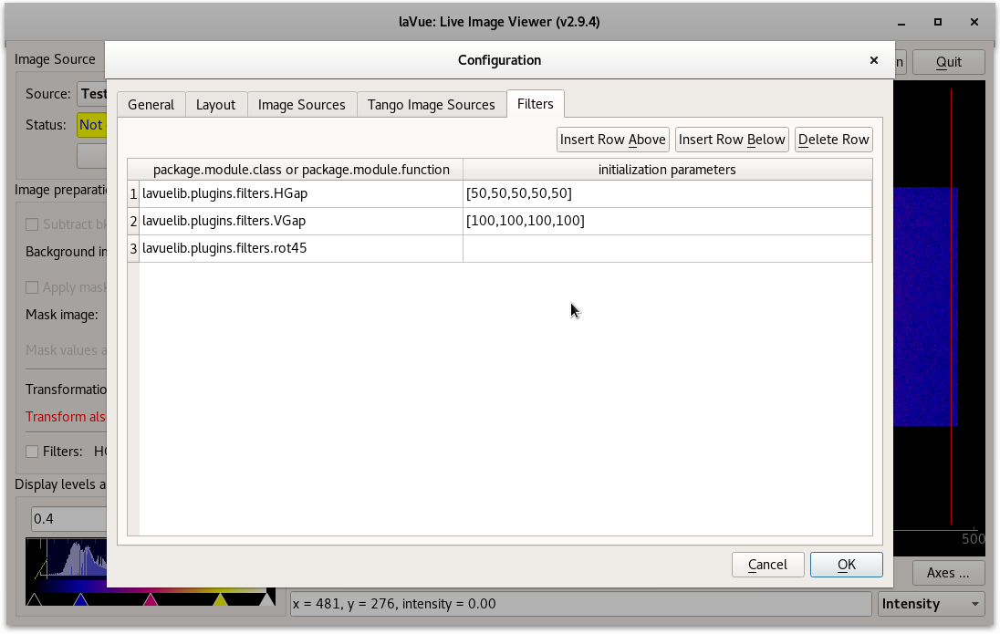

Filter plugins settings¶
The fifth tab of the configuration dialog contains Filters configuration. It allows to add the user Filter plugins defined by classes or functions in python packages.

Filter plugin table buttons:
- Insert Row Above: inserts a row for a filter plugin above the selected row
- Insert Row Below: inserts a row for a filter plugin below the selected row
- Delete Row: deletes the selected row
Filter plugin table columns:
- package.module.class or package.module.function: location of user plugin class or function in package.module directories
- initialization parameters: string which with initialization parameters of filter plugin class constructor